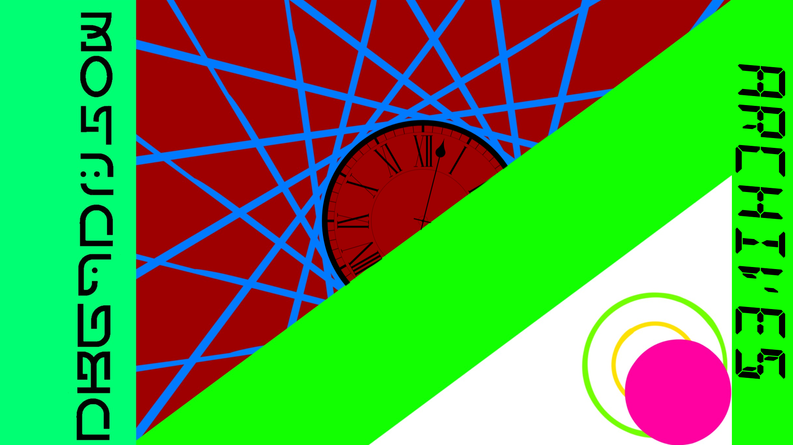

Project A.T.L.A.S - The History of Development

外部データベース[Supabase]連携、404ページ刷新、リリースノート詳細化。
ダークモードの視認性修正、クリエイターページのモバイル対応。
トップページデザイン刷新、ギャラリー機能の実装。
内部コード修正、機能改善。
ボタン風リンク項目の追加。
画像テキスト内容の変更。GitHub Pages移行後の初期版。
f5.si 時代の最終版。GitHub Pages向け最適化の前段階。
SSL化対応、リダイレクト実装。
制作物ページの追加。
プロジェクト始動。初期プロトタイプ。